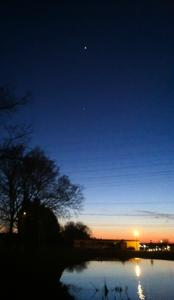
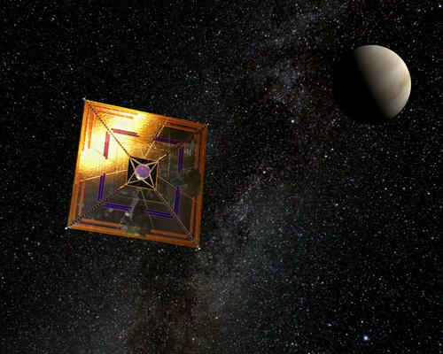

As the sun tries to rise, the dawn colors turn from deep black and purple to blue and orange. Peering through a few serene clouds I notice a bright point of light. It almost seems out of place. What right does such a perfect diamond have to be hanging in the morning sky like that? All of its companions have disappeared. No more stars. Only she is left.

She is Venus. She is another planet. Another world, looking back on us as we peer across the void at her. She’s fading. She’s getting ready for bed. She dresses for slumber. I watch as she dims with the return of the sun’s radiance, although, she is more pretty than the sun. More quaint and dainty. More fragile and pure. She is beautiful.
Looking at her from this point of view reminds me of standing on an island beach looking out over the ocean and just barely being able to make out another island. That island being just as real, just as stable, just as feature-full as my current island home – complete with sand, rocks, and trees of its own. I look through the clouds towards Venus and know that I’m actually peering into her clouds. I can almost imagine what her clouds look like just as I can imagine how the trees on that island peaking over the horizon must appear. I can’t see them directly, but I know they’re there. I know that if I were able to make it to that island, I could stand on the shores just as I do now and I could walk the beaches and climb the hills. I could gaze back at my own island and know the comfort of home is just a short trip away.
Through careful observation, we have learned that Venus isn’t an island paradise but instead a hellish world with acid rain, temperatures to melt lead, and pressures that would crush a person instantly. But it is still an island among islands nonetheless. It is a planet we could travel to. It is a destination which we could voyage to and explore and look back at our own island home and appreciate the comfort of Eden which awaits upon our return.
When I look at the sky and see planets and moons, I see places. I see celestial oceans and islands. I see the vast distances we could travel to visit our island neighbors. I imagine ships sailing these cosmic seas just like the first explorers who set out on expeditions into the unknown, centuries ago on Earth. I imagine the rolling swells that creak the decks in the moonlight just as solar sails catch photons which guide a ship through gravity wells. How does it look, standing on a ship sailing through the Cosmos?
From the deck, the sails stand in stark contrast to a background of black ink. It’s a blackness so pure it almost hurts to focus. The only relief comes from the brilliant pinpoints of light scattered randomly in all directions – even straight down. When the water is this still, the reflections of starlight are so perfectly mirrored that the water disappears; it’s ink and diamonds all the way around. The dark fathoms below conceal monsters and treasures alike. The volume beneath the vessel is overwhelming. The sky above is limitless; so vast and boundless it gives a sense of reverse-vertigo. Usually, the stars at night seem flat against a fake dome but at times like these, the depth can be felt. The stars are like trees in a never ending forest, and there are foot trails to infinity leading off in all directions.

Travelling these oceans takes more time than we’re used to. Time in this realm is on a different scale altogether. This sailor is old. This sailor is ancient. This sailor has sailed these seas and knows the currents well. Courses are plotted with high regard to the present heading. ‘Stay the course,’ that’s what the captain says. This ship uses natural currents and prevailing winds to guide her, and there’s no changing those. Solar winds and gravity wells propel and guide her.
What discoveries are waiting to be made? What adventures lay concealed in the darkness? I’ve heard tales of hungry massive black holes ravaging and devouring entire worlds, entire stars, entire solar systems! And those tales are only of the black holes that have been observed, if only fleetingly. There are many fold more who are wondering silently about the oceans, patiently waiting for their next victim. There are stories of supernovae, the most violent events in the known universe – exploding stars! – so enormous that the light from the explosion can outshine billions of its kin. The outburst will outshine an entire galaxy’s worth of stars. Terrifying...
There are legends of entire planets made completely out of diamonds, planets where it rains crystals, and planets without any land at all – only clouds! There are tales of solar systems that have not one, not two, but three or more suns. Imagine living on a planet with three sunrises! Stars, many times bigger than our own planet, spinning thousands of times a second! There is untold beauty and unthinkable terror permeating the cosmos, and we haven’t even begun to scratch the surface of what is truly out there.
I know I will never ride the solar winds in my lifetime, just like I will probably never sail the world’s oceans, but it’s still fun to play there. It is still fun to imagine and dream about such things. Envisioning these adventures helps quench my innate urge to wonder into the unknown and explore what’s just over the horizon. We’ve evolved to want to know what is over the next ridge or what’s around the next river bend. There’s no chance in fighting a million years of natural evolution, our only hope is to embrace it. Space truly is the next, and final frontier.
Imagination is a very powerful thing, and envisioning a voyage to this outer realm – a realm so close, yet so far away – can really put things into perspective. When you think of the scale and timelines and sheer volume of what is really out there, it enables you to step back and look at the world and your place in it a little differently. You are a part of this vastness. You are a genuine piece of the Cosmos. You are unique. You are special. And you are part of something bigger than yourself. It takes the pressure off by reminding us how some of the biggest problems we stress out over on a daily basis really aren’t that big after all. To quote a piece of ‘Desiderata’:
“...be gentle with yourself. You are a child of the universe, no less than the trees and the stars; you have a right to be here. And whether or not it is clear to you, no doubt the universe is unfolding as it should.”